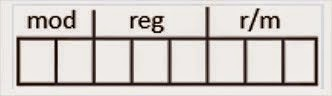

|
|
|
Inicio |
ITS |
Unidad 1 |
Unidad 2 |
Unidad 3 |
Unidad 4 |
La Unidad de Procesamiento (CPU) controla el funcionamiento del computador y lleva a cabo sus funciones de procesamiento de datos. Frecuentemente se le llama procesador.
Un procesador, incluye tanto registros visibles por el usuario como registros de control/estado. Los registros visibles por el usuario pueden ser de uso general o tener una utilidad especial, mientras que los registros de control y estado se usan para controlar el funcionamiento del procesador, un claro ejemplo es el contador de programa.
La CPU controla las operaciones básicas del ordenador enviando y recibiendo señales de control, direcciones de memoria y datos de un lugar a otro de la computadora a través de un grupo de canales llamados BUS.
Registro de datos: Un CPU puede funcionar con datos en uno de tres modos: entre dos registros, entre registros y una ubicación de Memoria de acceso al azar (RAM - Random-Access Memory) y entre dos ubicaciones RAM. Como el CPU está conectado directamente a los registros, las operaciones que implican dos registros son las más rápidas; las que se dan entre ubicaciones RAM son las más lentas. Es decir, junta dos registros, añade un registro a una ubicación RAM, o añade dos ubicaciones RAM.
Registro de direcciones: Para que un CPU pueda almacenar y recuperar datos en RAM, debe tener la dirección de la memoria de la información. Esas operaciones que implican RAM usan registros de dirección de memoria. EL CPU no realiza aritmética en estos registros; en cambio, los usa para ubicar datos que necesita.
Registro de índice: Un CPU no puede hacer matemáticas en registros de datos, aunque puede hacerlo indirectamente con un registro de índice. Éste trabaja con los registros de datos, permitiendo a un programa procesar hilos de información eficazmente.
Registros de segmento: Un registro de segmento tiene 16 bits de longitud y facilita un área de memoria para direccionamiento conocida como segmento actual.
Registros de propósito general: Los registros de propósito general son el AX, BX, CX, y DX, de 16 bits. Cada uno de ellos se divide en dos registros de 8 bits, llamados AH y AL, BH y BL, CH y CL, y, DH y DL, H significando High (alto) y L significando Low (bajo), indicando la parte alta o la parte baja del registro correspondiente de 16 bits.
Registros de apuntadores: Los registros SP (apuntador de pila) y BP (apuntador base) están asociados con el registro SS y permiten al sistema acceder a datos en el segmento de la pila.
Registros de banderas: Es un registro de 16
bits, de los cuales nueve sirven para indicar el
estado actual de la máquina y el resultado del
procesamiento.
La tabla contiene 16 posiciones (de 0 a 15),
que son los 16 bits del registro de banderas,
numeradas de derecha a izquierda. La posición
0 la encontraremos a la derecha y la posición
15 a la izquierda.
Registro de punteros de instrucción: El registro IP de 16 bits contiene el desplazamiento de dirección de la siguiente instrucción que se ejecuta. El IP está asociado con el registro CS en el sentido de que el IP indica la instrucción actual dentro del segmento de código que se está ejecutando actualmente en la memoria.
Se utilizan para controlar las operaciones del procesador, la mayor parte de estos registros no son visibles al usuario y algunos pueden ser accesibles a las instrucciones de maquina ejecutadas en un modo de control. Los registros utilizados son los siguientes:
En algún diseño concreto de procesador es posible encontrar
otros registros relativos a estado y control.
Puede existir un puntero a un bloque de memoria que
contenga información de estado adicional (por ejemplo,
bloques de control de procesos). En las máquinas que
usan interrupciones vectorizadas puede existir un registro
de vector de interrupción. Si se utiliza una pila para llevar
a cabo ciertas funciones (por ejemplo, llamada a subrutina),
se necesita un puntero de pila del sistema. En un sistema de
memoria virtual se usa un puntero a la tabla de páginas. Por
último, pueden emplearse registros para el control de operaciones
de E/S. En el diseño de la organización de los registros de control
y estado entran en juego varios factores. Una cuestión primordial
es el soporte del sistema operativo. Algunos tipos de información
de control son de utilidad específica para el sistema operativo.
Si el diseñador del procesador posee una comprensión funcional del
sistema operativo que se va a utilizar, la organización de los
registros puede adaptarse hasta cierto punto a ese sistema
operativo. Otra decisión importante en el diseño es la distribución
de información de control entre registros y memoria. Es frecuente
dedicar los primeros (más bajos) pocos cientos o miles de palabras
de memoria para fines de control. El diseñador debe decidir cuánta
información de control debiera estar en registros y cuánta en memoria.
Se presenta el compromiso habitual entre coste y velocidad.
Procedimiento bien establecido.
Un conjunto de instrucciones o repertorio de instrucciones, juego de instrucciones o ISA (del inglés Instruction Set Architecture, Arquitectura del Conjunto de Instrucciones) es una especificación que detalla las instrucciones que una CPU de un ordenador puede entender y ejecutar, o el conjunto de todos los comandos implementados por un diseño particular de una CPU. El término describe los aspectos del procesador generalmente visibles a un programador, incluyendo los tipos de datos nativos, las instrucciones, los registros, la arquitectura de memoria y las interrupciones, entre otros aspectos.
Existen principalmente de 3 tipos: CISC (Complex Instruction Set Computer), RISC (Reduced Instruction Set Computer) y SISC (Simple Instruction Set Computing).
La arquitectura del conjunto de instrucciones (ISA) se emplea a veces para distinguir este conjunto de características de la microarquitectura, que son los elementos y técnicas que se emplean para implementar el conjunto de instrucciones. Entre estos elementos se encuentran las microinstrucciones y los sistemas de caché.
Procesadores con diferentes diseños internos pueden compartir un conjunto de instrucciones; por ejemplo, el Intel Pentium y AMD Athlon implementan versiones casi idénticas del conjunto de instrucciones x86, aunque tienen diseños diferentes.
Características que debe tener un conjunto de instrucciones: Las características que se pretende que tenga un conjunto de instrucciones son cuatro, principalmente:
En esta idea se basan las arquitecturas RISC, no obstante,
con este conjunto no se puede conseguir la eficiencia del
repertorio de instrucciones por lo que en la práctica el
conjunto suele ser más amplio en aras de conseguir un mejor
rendimiento, tanto en uso de recursos como en consumo de tiempo.
Contar con diferentes formatos de instrucciones, implica contar con diferentes formas de obtener los operandos de las instrucciones. Por lo general a estas múltiples formas se les conoce como modos de direccionamiento. Los modos de direccionamiento en MIPS son:
Es importante mencionar que estamos estudiando una arquitectura con direcciones de 32 bits, sin embargo, MIPS, como muchas otras arquitecturas, tiene una extensión que maneja direcciones de 64 bits. Esto como una respuesta a la necesidad de manejar programas cada vez más grandes.
I-8086
Los modos de direccionamiento del 8086 (Crawford & Gelsinger,
1987) son muy irregulares. Los registros del procesador, se
usan para contener los datos con que se está trabajando puesto
que el acceso a los registros es mucho más rápido que los
accesos a memoria. Se pueden realizar operaciones aritméticas
y lógicas, comparaciones, entre otras.
Hay un campo para un registro (reg), que especifica uno de los
operandos, y otros dos campos (mod y r/m) para el otro.
Los modos del 8086 son indirectos por registro, indexados o
directos por registro.

Motorola 68000
En el Motorola 68000 el mismo direccionamiento lleva implícito el
tipo de registro sobre el que trabaja (direcciones o datos). Está
basado en dos bancos de 8 registros de 32 bits. Un banco es de
datos (Dn) y el otro de punteros (An). Además contiene un contador
de programa de 32 bits y un registro de estado de 16 bits. Los
registros de datos (D0 a D7) se pueden usar como registros de
32 bits (.l), 16 bits (.w) y 8 bits (.b). Cualquiera de ellos
puede usarse como acumulador, índice o puntero.
80386
La CPU está compuesta por la unidad de ejecución y la unidad de
instrucciones. La unidad de ejecución contiene los ocho registros
de 32 bits de propósito general que se utilizan para el cálculo
de direcciones y operaciones con datos y un barrel shifter de
64 bits que se utiliza para acelerar las operaciones de
desplazamiento, rotación, multiplicación y división.
Para este microprocesador existe un modo nuevo que
requiere un byte adicional denominado SIB (escala,
índice, base) que se añade al byte de operandos y cuyo
formato es el siguiente: Ese byte adicional especifica un
factor de escala y dos registros (base e índice).
|
|
{kind=link}